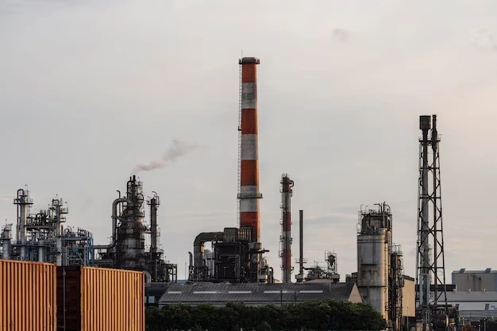
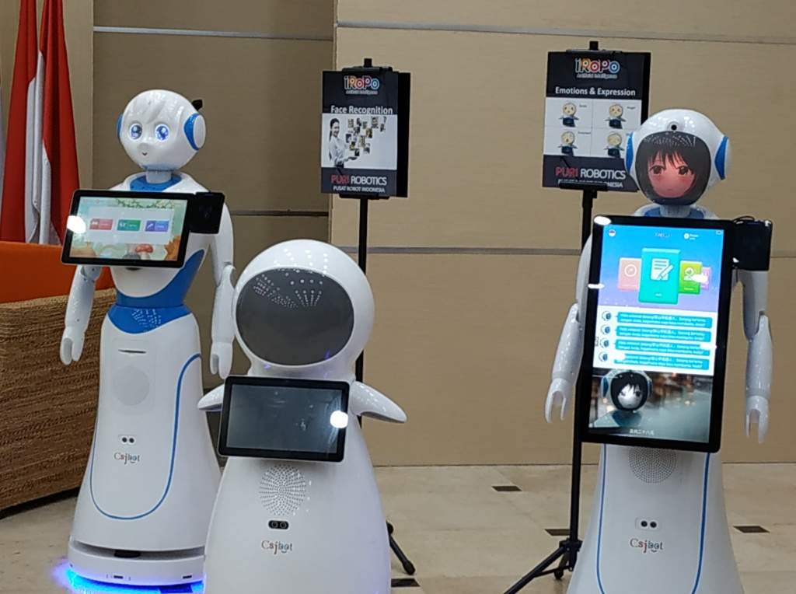

REVOLUSI INDUSTRI 1.0
Pada revolusi industri pertama terjadi perubahan secara besar-besaran di bidang pertanian, manufaktur, pertambangan, transportasi dan teknolog

REVOLUSI INDUSTRI 2.0
Revolusi industri 2.0 terjadi di awal abad ke-19 sampai abad ke-20 ditandai dengan munculnya listrik yang membuat hasil produksi jauh lebih murah daripada sebelumnya

REVOLUSI INDUSTRI 3.0
terciptanya teknologi komputer menjadi pertanda cikal bakal kemudahan pekerjaan. revolusi industri 3.0 sudah menggunakan sistem otomatisasi yang dikontrol oleh komputer.

REVOLUSI INDUSTRI 4.0
industri 4.0 telah mengembangkan teknologi berkelanjutan seperti internet, komputerisasi, microchip, internet of things (IoT), deep learning, kecerdasan buatan (artificial intelligence/AI), machine learning.